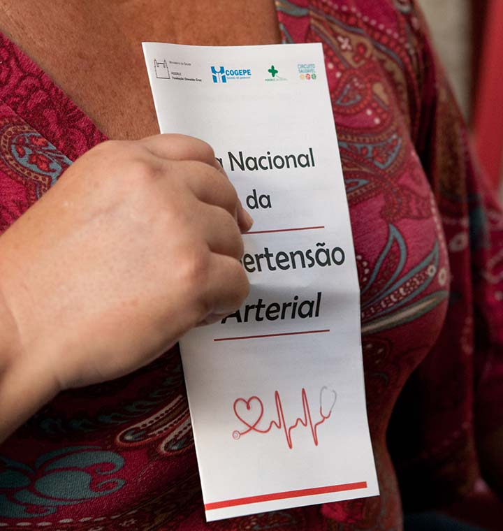
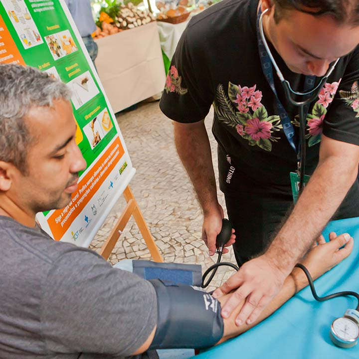
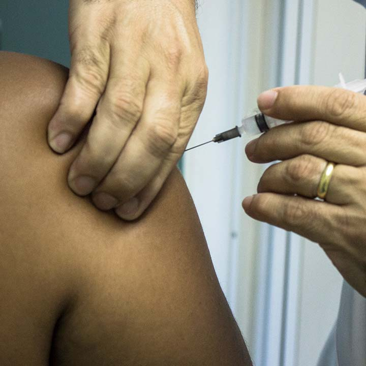

Módulo 2 | Aula 2 O cuidado e o autocuidado no contexto da promoção da saúde e prevenção de doenças
Promoção da saúde e prevenção de doenças

A Promoção da Saúde, embora esteja prevista no conjunto de políticas de saúde brasileiras, tem sido abordada de modo variado pelos profissionais de saúde, pois perpassa pela compreensão do seu significado para sua aplicabilidade, e cuja eficiência depende da intersetorialidade, integralidade e participação ativa dos indivíduos (MEDINA et al., 2014; PELEGRINI FILHO; BUSS; ESPERIDIÃO, 2014).
Para sedimentar os conhecimentos adquiridos até agora, vamos aprofundar um pouco mais a diferenciação entre as ações de promoção da saúde e prevenção de doenças.
Para a prevenção de doenças, precisamos unir conceitos que se referem ao conjunto de ações direcionadas a evitar o desenvolvimento de agravos à saúde. Isso porque parte do entendimento de prevenção significa preparar ou chegar antes, portanto, parte do conhecimento do processo de progressão de uma doença ou agravo para efetuar ações orientadas a evitar seu surgimento ou agravamento.
Mas como podemos evitar o surgimento de uma doença?
A Promoção da Saúde desenha-se no bem viver, a partir das transformações na vida, no trabalho e na atuação em sociedade.

- Definição: Fomentar, impulsionar ações, mudar
- Objetivo: Promover bem-estar geral
- Foco: Determinantes Sociais de Saúde (DSS)
- Como é realizada: Ação multiestratégica
- Papel da pessoa: Corresponsável pelas mudanças
Fonte: Baseado em Brasil (2021)

- Definição: Chegar antes, impedir que se realize
- Objetivo: Evitar o surgimento de doenças
- Foco: Doenças, agravos à saúde
- Como é realizada: Ação pontual
- Papel da pessoa: Responsável pelas mudanças
Fonte: Baseado em Brasil (2021)
Considerando as práticas gerais de cuidado em saúde, conseguimos entender que tanto as ações de promoção de saúde quanto as de prevenção de condições de saúde ou doença constituem campos de intervenção importantes, pois impactam sobre os conhecimentos, os comportamentos e a tomada de decisões das pessoas devido à ampliação dos níveis de Literacia para a Saúde (LS).
Essas ações contribuem para o bem-estar e a qualidade de vida dos indivíduos, conforme estes acessam as fontes de obtenção de informações, os serviços de saúde e os profissionais de saúde que compõem a rede de cuidados.
Nesse sentido, torna-se fundamental criar, nos diversos espaços em que se dá a relação humana (serviços de saúde, locais de trabalho, agremiações, ambientes familiares etc.) oportunidades para a realização de ações que a LS permite, pois quanto maior o nível de LS, maiores as possibilidades de exercício da cidadania, pela qual a pessoa se percebe enquanto sujeito de direito, passando a se interessar pelas questões sociais também (SOUSA, 2022). Nessa perspectiva, a abordagem da LS no contexto da Atenção Primária à Saúde (APS) faz-se essencial, pois apoia as estratégias de promoção da saúde, prevenção de doenças e as atividades de educação em saúde propriamente ditas (FIGUEIREDO et al., 2018; SOUSA et al., 2021).
Importante destacar que os resultados dos baixos níveis de LS são mais impactantes na APS (BARRETT, PURYEAR, WESTPHELING, 2008), pois é um espaço de oportunidades para a equipe de saúde utilizar estratégias que permitam promover discussões coletivas com a população, visando aumentar seus conhecimentos sobre saúde e a capacidade das pessoas de tomarem decisões para o autocuidado, com base nas informações adquiridas junto a esses profissionais.